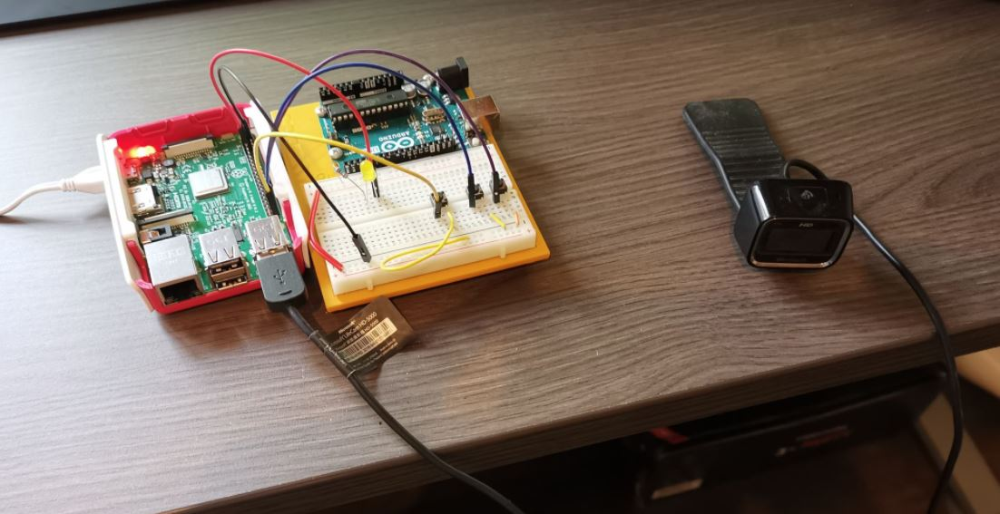
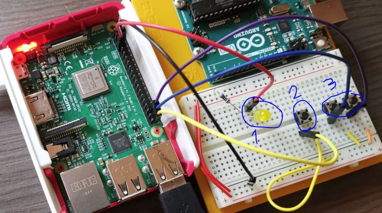

Oppgave 4 - Raspberry Pi
Mitt prosjekt er enkelt forklart en enkel timelapse via en webserver på raspberry pi-en. For å få tatt bilder har jeg tatt i bruk et webcamera jeg hadde liggende. Jeg har også benyttet enkel elktronikk til noen funksjoner.
Oppsett og Konfigurasjon av Rpi
Jeg startet med å montere pi-en i dekselet som fulgte med. Deretter satt jeg i medfølgende microSD og startet installasjon via medfølgende programvare. Koplet til en skjerm og et tastatur, koplet til wifi, skrudde så på VNC og sjekket ip så fort som mulig for å slippe å være koplet til direkte.Når jeg kom inn via VNC endret jeg standardoppløsning til 1920x1080 ved rspi-config. Deretter var det tilkopling og testing av webcamera etterfulgt av installasjon av apache og fswebcam samt testing av dette.
Webserver og Webside
Webserveren er basert på apache. Deretter har jeg laget en side som egentlig kun viser frem et bilde. Javascript sørger for at bildet lastes inn på nytt hvert 2. sekund.Koden til nettsiden finnes på github repoet HER.
Elektronikk
- LED diode som lyser hver gang et bilde taes.
- Knapp som tvinger at det skal tas et bilde hver gang den trykkes
- Disse knappene justerer hastigheten for hvor ofte bilder skal tas automatisk, venstre senker hastighet med 1sek/trykk og høyre øker.
Python kode
Hjertet av prosjektet ligger selvsagt i python koden.Jeg benytter litt forskjellige metoder for å utføre forskjellige oppgaver her. Det koden utfører er å ved hjelp av funksjonene jeg har laget ta et bilde og lagre dette så det kan brukes på nettsiden i et gitt intervall antall sekunder.
For hver gang et bilde tas (funksjonen take_pic() kjøres) lyser LED diode og et bilde tas med programmet fswebcam kjørt ved hjelp av os.System().
ettersom jeg ikke kan plukke opp knappetrykk samtidig som jeg bruker sleep() i loopen kjører jeg loopen i en egen thread. Dette gjør at loopen vil kjøre med sin respektive tid basert på variabelen wait i funksjonen sleep().
pause i main threaden gjør at koden vil vente til det skjer noe (en av knappene trykkes). Dersom bildeknappen trykkes kjøres den samme funksjonen som loopen bruker. Dersom en av hastighetsknappene trykkes endres wait med +- 1 sekund.
Python koden finnes i github repoet HER.